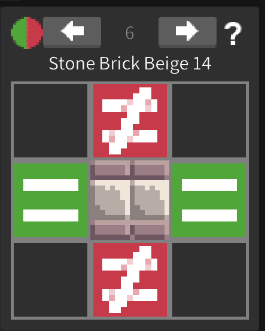

像素美工
本章将简要介绍引擎内置的美工编辑器。该编辑器所编辑的数据来源于当前工程文件夹下的 Universe\Sheet\Game Sheet.sheet 文件。该文件是 AngeliA 专用格式的无损压缩二进制文件，用于保存像素风格的美术资源及其所有附加信息，例如图块的标签、边框等内容。
美工编辑器主要分为这几个部分：左侧的图集列表、中间的主编辑区、上方的工具栏、右侧的绘图工具。

图块与图集
图集由用户自行创建和修改，多个图集可归类至图集文件夹中，便于统一管理。图集分为三种类型：普通、关卡 和 背景。其中，关卡类图集中的图块将被引擎识别为“可用于地图的关卡块”，背景类图集同理。要更改图集类型，只需在图集列表中右键点击目标图集，并在弹出菜单中选择所需类型。
主编辑区用于显示当前图集中的全部图块。您可以在右侧工具栏中选择“图块工具”，通过左键点击并拖动来选择一个或多个图块。选中图块后，上方工具栏将切换为如下所示的界面：

① 图块名称：
图块名称必须唯一，不能与同一图集或其他图集中的图块重名。当同时选中多个图块时，输入框内将显示 *，此时仍可编辑图块名称。系统会自动将图块依次命名为“名称 0”、“名称 1”、“名称 2”……，这些图块将被视为一个图块组，可用于帧动画、自动平铺等功能。
② 图块尺寸： 以像素为单位，显示并可编辑图块的宽高。
③ 图块边框： 从左至右依次为左、右、下、上边框。该设置用于 9-Slice 渲染图块，也可用于为关卡块指定更小的碰撞区域。
④ 图块枢纽（Pivot）： 指定图块的对齐参考点。在游戏中以点位渲染图块时，该点将与代码指定的位置对齐。修改关卡块或背景块的枢纽会影响地图中图块的渲染位置。
⑤ 图块的 Z 位置： 用于确定图块的渲染遮挡顺序。该值可在游戏代码中被覆盖。
⑥ 动画持续时间： 以帧为单位，设置图块的动画帧持续时间。
⑦ 通用工具栏（从左至右）：
触发器（Trigger）： 将选中的图块标记为触发器。触发器不会与实体发生碰撞，但仍会被加载进物理系统，可用于触发特定的游戏逻辑，例如触碰时为角色回复生命、定义一个可被检测的范围等。
标签（Tag）： 为选中图块添加逻辑标签，详见 枚举Tag
自动平铺规则： 设置图块在关卡编辑器中的自动平铺行为（如下图）。引擎会按图块组顺序逐一匹配规则，若当前地图内容符合某条规则，即使用对应图块绘制。下图的规则为：左右相邻块需与当前图块 ID 相同，上下相邻块需 ID 不同，斜向块不参与判断（系统支持设置斜向规则）
删除选中图块（快捷键
Del）输出图块信息（仅在引擎 Debug 模式下可用）
⑧ 内容转换工具栏（从左至右）：
- 顺时针旋转图块
- 逆时针旋转图块
- 水平翻转图块
- 垂直翻转图块
- 一键裁剪图块四周空白区域
绘图
编辑器仅允许在图块内进行绘图。选中绘图工具后，在图块区域内按住左键并拖动鼠标即可绘制像素，右键点击则可吸取像素颜色。
绘图工具自上而下依次为：
- 矩形工具：按住 Shift 键绘制正方形，按住 Alt 键绘制空心矩形。
- 椭圆工具：按住 Shift 键绘制正圆，按住 Alt 键绘制空心圆。
- 直线工具：拖拽鼠标绘制直线。
- 油漆桶工具：填充图块内所有相邻且颜色相同的区域；拖拽可填充线性渐变；按住 Ctrl 点击可替换图块中所有相同颜色的像素（不要求相邻）。
- 像素选择工具：用于选中像素并进行移动、删除或复制操作，支持跨多个图块进行选择。
- 图块工具：用于选择、复制、删除图块，或修改图块的属性信息。